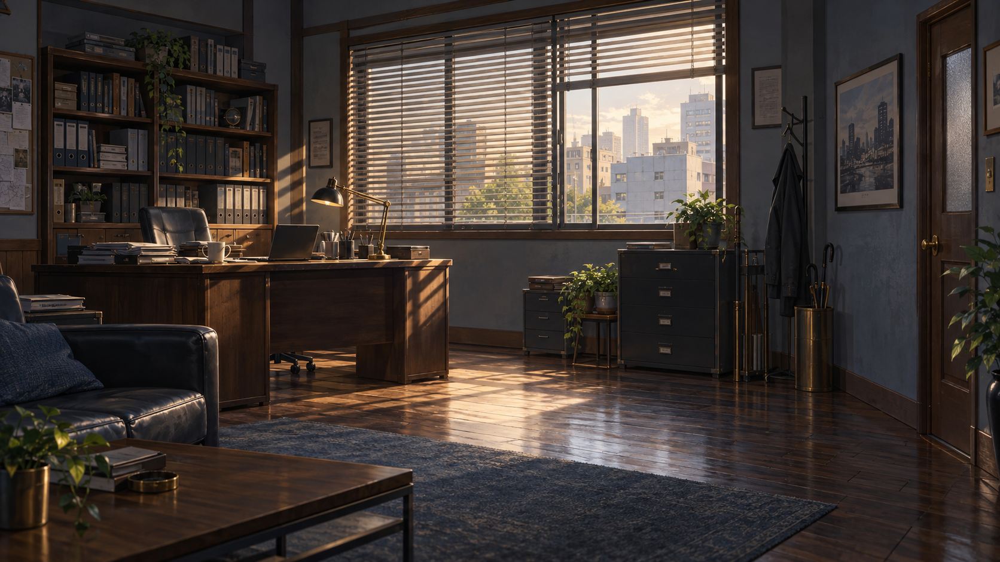

佐伯探偵事務所・仮背景日時未設定



表示確認用の見本です。既存の仮背景と現行UIを使用しています。配置案は未採用です。

確認点：顔の大きさ／胸元や口元の手／会話欄に隠れる腰付近の手／通常と各表情の位置差。会話欄をOFFにすると素材下端の切れ目も確認できます。
1920×1080基準、湊x26％・澪x74％。会話欄は幅90％・高さ320px・下余白24px・不透明度68％。現行story.cssを直接参照し、人物の幅と上位置だけを見本内で変更します。以前の案は2人とも幅54％・上12％。顔の寸法を比較した調整案では湊をそのまま、澪を90％（幅48.6％・上18％）で表示します。澪の位置も下げて素材下端を画面外に保ちます。これは表示確認上の仮位置で、身長設定ではありません。腰の手は会話欄に隠れます。身長設定や正式配置の確定ではありません。HUDのアイコンは見本用の簡略線画で、ボタンはゲーム操作を行いません。